This page reads its images' pixels, which browsers block for files opened from disk. Open it
from a web server instead, for example python3 -m http.server in the repository folder.
spectra6-dotgain vs the paperlesspaper app
On an E Ink Spectra 6 panel, a light pixel next to darker pixels looks darker than its ink. We measured this on a paperlesspaper OpenPaper L (13.3", 1600×1200): with 1, 2, 3 or 4 darker neighbours, 20, 27, 33 or 51 % of a pixel takes their colour. Yellow bleeds into white almost as much as black does, and green in fine patterns looks yellow-green.
spectra6-dotgain dithers for this. It maps the photo to what the inks can show, then runs error diffusion that tries every ink for each pixel, predicts with the panel model how that pixel and its neighbours will look, and keeps the closest. Code: tone and colour, dithering, panel model. The README has the measurements, the blind tests on a real frame and the limits.
Click an image to see it three ways: the photo, epdoptimize 1.3.0 as the paperlesspaper app runs it (re-created from the app's source), and spectra6-dotgain. Both dithered versions are simulated with the panel model. Our dithering is designed for that model, so the simulation favours us.
paperlesspaper's sample images
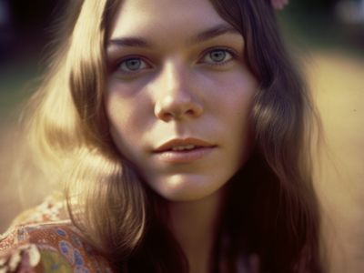
Portrait (AI-generated)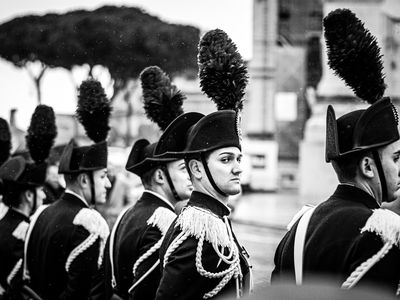
ParadeFlags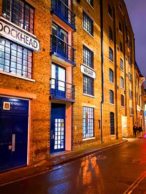
Warehouse at dusk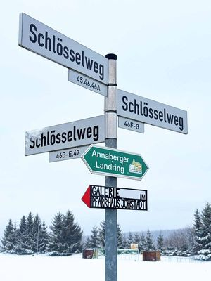
Signpost in snow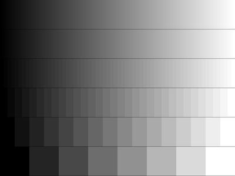
Grey rampepdoptimize's demo images
All of them except four that show the same picture as a sample above.
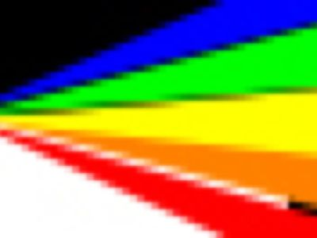
Colorfile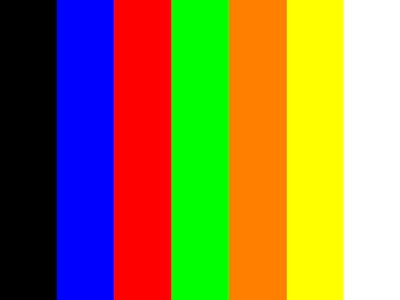
Regenbogen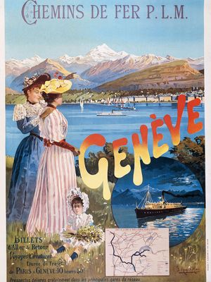
affiche-plm-geneve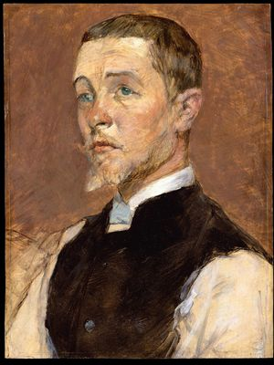
albert-rene-grenier-1858-1925-met-dt2167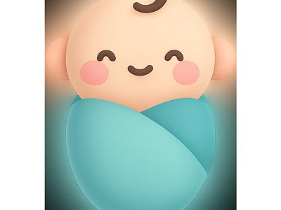
babybaby_outline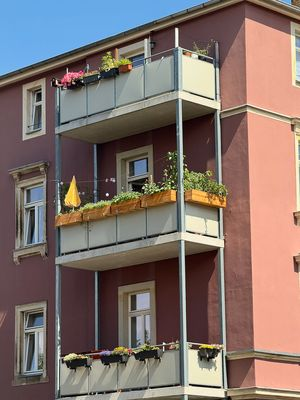
balcony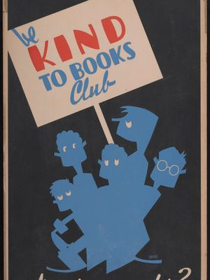
be-kind-to-books-club-lccn2011645392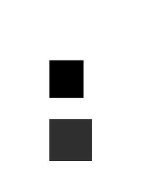
black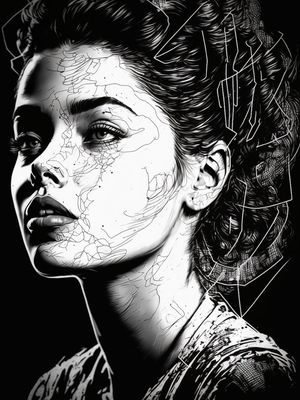
blackandwhite_illustration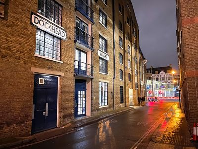
buildings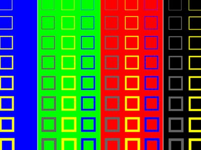
color_comparecolor_compare_jpg_artefact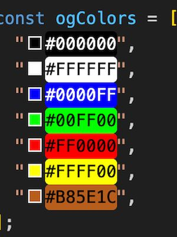
color_screenshot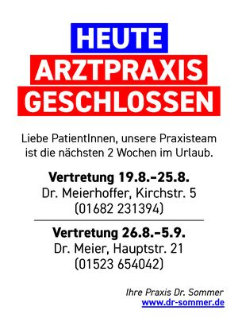
doctor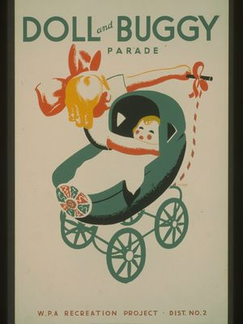
doll-and-buggy-parade-wpa-recreation-project-dist-no-2-lccn98508975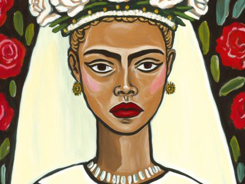
f-Sarah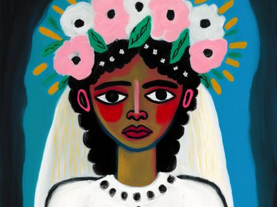
f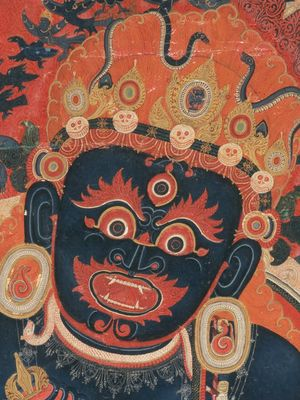
face-detail-15th-century-painting-from-tibet-central-tibetan-mahakala-protector-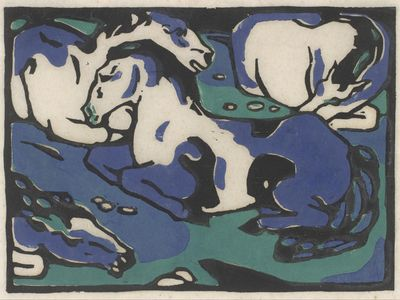
franz-marc-resting-horses-google-art-projecthalloween-roller-skating-carnival-wpa-poster-1936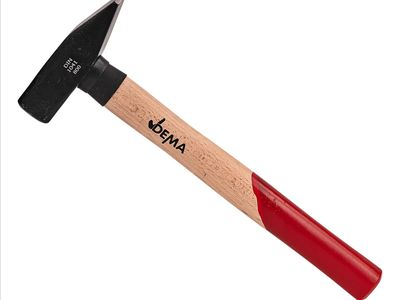
hammerhands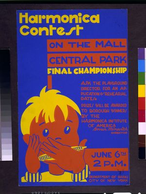
harmonica-contest-on-the-mall-central-park-lccn94504459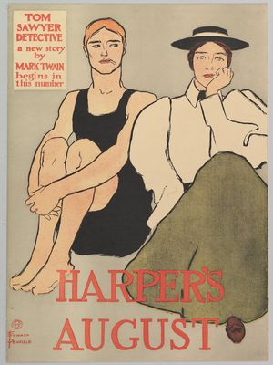
harper-s-august-met-dp823644harry-herzog-first-foreign-trade-zone-wpa-poster-1937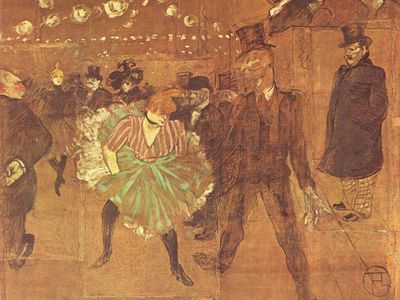
henri-de-toulouse-lautrec-006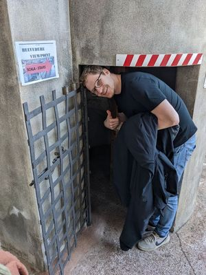
holiday_photo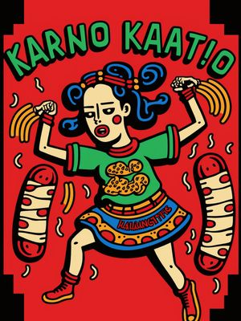
illustration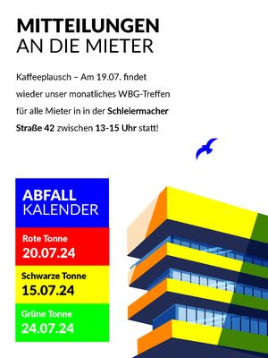
info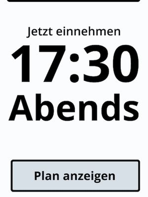
iphone_mockup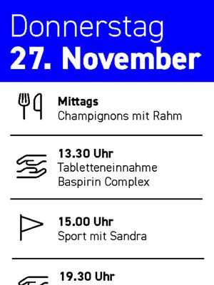
kalender-7-zoll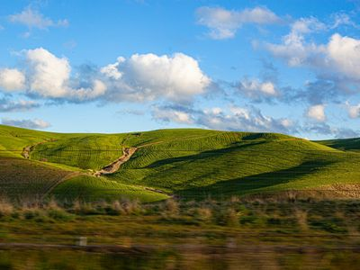
landscape-jpg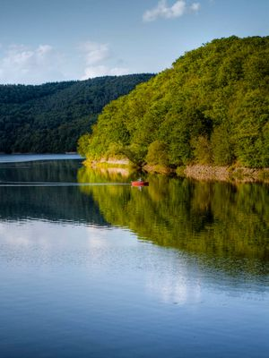
landscape-png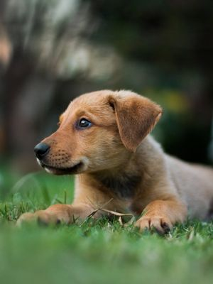
littledog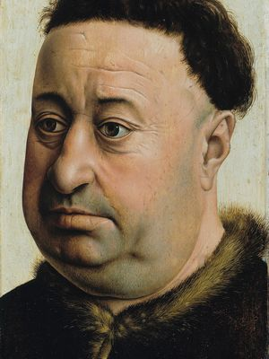
master-of-flemalle-portrait-of-a-fat-man-google-art-project-331318medication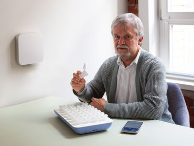
old_menpaint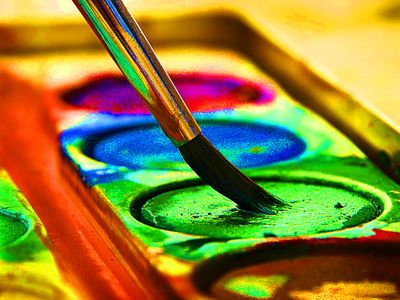
paint_oversaturated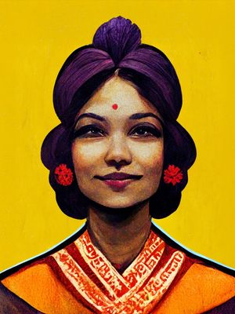
painting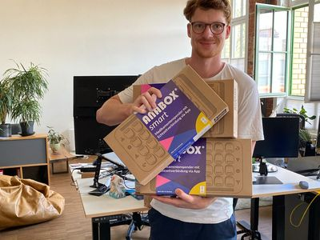
person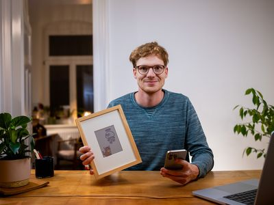
person2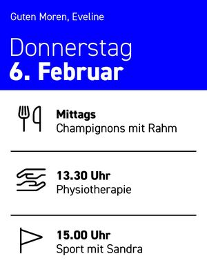
pflege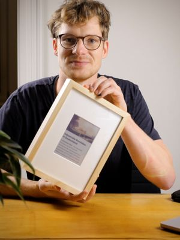
photo_suboptimallight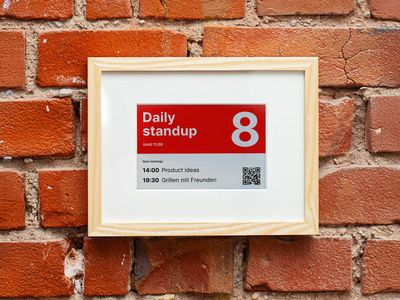
photo_with_red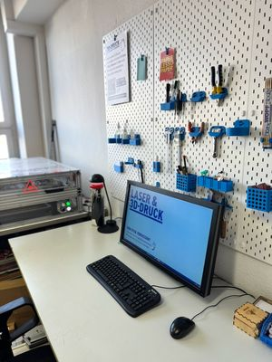
photo_workshop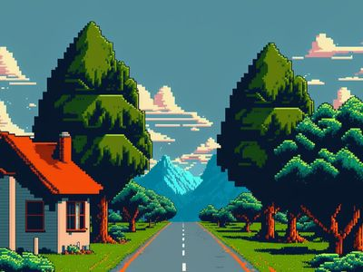
pixelart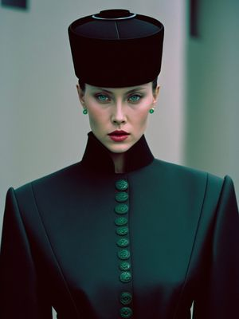
professional_photo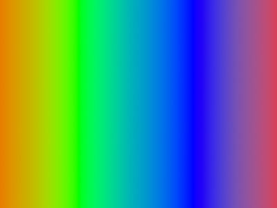
rainbow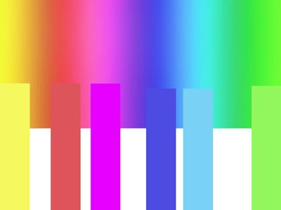
rainbox-steps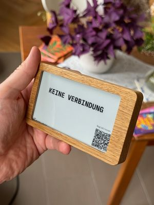
regular_photoschiffscreen-catthe-chap-booktitian-cardinal-pietro-bembo-google-art-projectunwanted-dithering-on-e-ink-spectrum-6-displaysutagawa-kuniyoshi-image-of-a-kabuki-actor-on-a-folding-fan-google-art-projectvan-gogh-starry-night-google-art-projectvincent-van-gogh-self-portrait-google-art-projectwestfield-athenaeum-federal-art-project-water-color-show-lccn98513161workshopswpa-federal-art-project-paintings-barnstable-high-school-hyannis-lccn98513147wpa-index-of-american-design-exhibition-lccn98513148Sample images: paperlesspaper's (samples/NOTICE). Demo images: from epdoptimize (gallery/NOTICE). Both under their own terms.
Portrait (AI-generated)
epdoptimize classifies it as a photo (confidence 0.32) and dithers it with Floyd-Steinberg. Photo file

Parade
epdoptimize classifies it as a high-contrast photo (confidence 0.12) and dithers it with Stucki. Photo file

Flags
epdoptimize classifies it as a photo (confidence 0.49) and dithers it with Floyd-Steinberg. Photo file

Warehouse at dusk
epdoptimize classifies it as a photo (confidence 0.65) and dithers it with Floyd-Steinberg. Photo file

Signpost in snow
epdoptimize classifies it as a flat illustration (confidence 0.75) and dithers it with Floyd-Steinberg. Photo file

Grey ramp
epdoptimize classifies it as a flat illustration (confidence 0.90) and dithers it with Floyd-Steinberg. Photo file

Colorfile
epdoptimize classifies it as a flat illustration (confidence 0.65) and dithers it with Floyd-Steinberg. Photo file

Regenbogen
epdoptimize classifies it as a flat illustration (confidence 1.00) and dithers it with Floyd-Steinberg. Photo file

affiche-plm-geneve
epdoptimize classifies it as a photo (confidence 0.53) and dithers it with Floyd-Steinberg. Photo file

albert-rene-grenier-1858-1925-met-dt2167
epdoptimize classifies it as a photo (confidence 0.35) and dithers it with Floyd-Steinberg. Photo file

baby
epdoptimize classifies it as a flat illustration (confidence 0.81) and dithers it with Floyd-Steinberg. Photo file

baby_outline
epdoptimize classifies it as a flat illustration (confidence 1.00) and dithers it with Floyd-Steinberg. Photo file

balcony
epdoptimize classifies it as a photo (confidence 0.10) and dithers it with Floyd-Steinberg. Photo file

be-kind-to-books-club-lccn2011645392
epdoptimize classifies it as a flat illustration (confidence 0.70) and dithers it with Floyd-Steinberg. Photo file

black
epdoptimize classifies it as a flat illustration (confidence 1.00) and dithers it with Floyd-Steinberg. Photo file

blackandwhite_illustration
epdoptimize classifies it as text or UI (confidence 0.35) and dithers it with Floyd-Steinberg, matching colours in Lab. Photo file

buildings
epdoptimize classifies it as a photo (confidence 0.43) and dithers it with Floyd-Steinberg. Photo file

color_compare
epdoptimize classifies it as a flat illustration (confidence 0.94) and dithers it with Floyd-Steinberg. Photo file

color_compare_jpg_artefact
epdoptimize classifies it as a high-contrast photo (confidence 0.34) and dithers it with Stucki. Photo file

color_screenshot
epdoptimize classifies it as a flat illustration (confidence 0.86) and dithers it with Floyd-Steinberg. Photo file

doctor
epdoptimize classifies it as text or UI (confidence 1.00) and does not dither: each pixel gets the nearest colour in Lab. Photo file

doll-and-buggy-parade-wpa-recreation-project-dist-no-2-lccn98508975
epdoptimize classifies it as line art (confidence 0.25) and dithers it with Floyd-Steinberg. Photo file

f-Sarah
epdoptimize classifies it as a high-contrast photo (confidence 0.44) and dithers it with Stucki. Photo file

f
epdoptimize classifies it as a photo (confidence 0.39) and dithers it with Stucki. Photo file

face-detail-15th-century-painting-from-tibet-central-tibetan-mahakala-protector-
epdoptimize classifies it as a photo (confidence 0.29) and dithers it with Floyd-Steinberg. Photo file

franz-marc-resting-horses-google-art-project
epdoptimize classifies it as a photo (confidence 0.26) and dithers it with Floyd-Steinberg. Photo file

halloween-roller-skating-carnival-wpa-poster-1936
epdoptimize classifies it as a flat illustration (confidence 0.65) and dithers it with Floyd-Steinberg. Photo file

hammer
epdoptimize classifies it as a flat illustration (confidence 1.00) and dithers it with Floyd-Steinberg. Photo file

hands
epdoptimize classifies it as a photo (confidence 0.13) and dithers it with Stucki. Photo file

harmonica-contest-on-the-mall-central-park-lccn94504459
epdoptimize classifies it as a photo (confidence 0.03) and dithers it with Floyd-Steinberg. Photo file

harper-s-august-met-dp823644
epdoptimize classifies it as a photo (confidence 0.16) and dithers it with Floyd-Steinberg. Photo file

harry-herzog-first-foreign-trade-zone-wpa-poster-1937
epdoptimize classifies it as a high-contrast photo (confidence 0.47) and dithers it with Stucki. Photo file

henri-de-toulouse-lautrec-006
epdoptimize classifies it as a photo (confidence 0.12) and dithers it with Floyd-Steinberg. Photo file

holiday_photo
epdoptimize classifies it as a photo (confidence 0.34) and dithers it with Floyd-Steinberg. Photo file

illustration
epdoptimize classifies it as a flat illustration (confidence 0.44) and dithers it with Floyd-Steinberg. Photo file

info
epdoptimize classifies it as a flat illustration (confidence 1.00) and dithers it with Floyd-Steinberg. Photo file

iphone_mockup
epdoptimize classifies it as line art (confidence 1.00) and does not dither: each pixel gets the nearest colour in Lab. Photo file

kalender-7-zoll
epdoptimize classifies it as a flat illustration (confidence 1.00) and dithers it with Floyd-Steinberg. Photo file

landscape-jpg
epdoptimize classifies it as a photo (confidence 0.33) and dithers it with Floyd-Steinberg. Photo file

landscape-png
epdoptimize classifies it as a photo (confidence 0.28) and dithers it with Floyd-Steinberg. Photo file

littledog
epdoptimize classifies it as a photo (confidence 0.19) and dithers it with Floyd-Steinberg. Photo file

master-of-flemalle-portrait-of-a-fat-man-google-art-project-331318
epdoptimize classifies it as a photo (confidence 0.33) and dithers it with Floyd-Steinberg. Photo file

medication
epdoptimize classifies it as a flat illustration (confidence 1.00) and dithers it with Floyd-Steinberg. Photo file

old_men
epdoptimize classifies it as a photo (confidence 0.05) and dithers it with Floyd-Steinberg. Photo file

paint
epdoptimize classifies it as a photo (confidence 0.79) and dithers it with Floyd-Steinberg. Photo file

paint_oversaturated
epdoptimize classifies it as a photo (confidence 0.75) and dithers it with Stucki. Photo file

painting
epdoptimize classifies it as a photo (confidence 0.32) and dithers it with Stucki. Photo file

person
epdoptimize classifies it as a photo (confidence 0.44) and dithers it with Stucki. Photo file

person2
epdoptimize classifies it as a photo (confidence 0.05) and dithers it with Floyd-Steinberg. Photo file

pflege
epdoptimize classifies it as a flat illustration (confidence 1.00) and dithers it with Floyd-Steinberg. Photo file

photo_suboptimallight
epdoptimize classifies it as a photo (confidence 0.17) and dithers it with Stucki. Photo file

photo_with_red
epdoptimize classifies it as a photo (confidence 0.30) and dithers it with Stucki. Photo file

photo_workshop
epdoptimize classifies it as a photo (confidence 0.40) and dithers it with Floyd-Steinberg. Photo file

pixelart
epdoptimize classifies it as a photo (confidence 0.10) and dithers it with Floyd-Steinberg. Photo file

professional_photo
epdoptimize classifies it as a flat illustration (confidence 0.40) and dithers it with Floyd-Steinberg. Photo file

rainbow
epdoptimize classifies it as a photo (confidence 0.10) and dithers it with Floyd-Steinberg. Photo file

rainbox-steps
epdoptimize classifies it as a flat illustration (confidence 0.73) and dithers it with Floyd-Steinberg. Photo file

regular_photo
epdoptimize classifies it as a photo (confidence 0.40) and dithers it with Floyd-Steinberg. Photo file

schiff
epdoptimize classifies it as a photo (confidence 0.83) and dithers it with Stucki. Photo file

screen-cat
epdoptimize classifies it as text or UI (confidence 0.61) and dithers it with Floyd-Steinberg, matching colours in Lab. Photo file

the-chap-book
epdoptimize classifies it as a photo (confidence 0.12) and dithers it with Floyd-Steinberg. Photo file

titian-cardinal-pietro-bembo-google-art-project
epdoptimize classifies it as a photo (confidence 0.09) and dithers it with Floyd-Steinberg. Photo file

unwanted-dithering-on-e-ink-spectrum-6-displays
epdoptimize classifies it as a flat illustration (confidence 1.00) and dithers it with Floyd-Steinberg. Photo file

utagawa-kuniyoshi-image-of-a-kabuki-actor-on-a-folding-fan-google-art-project
epdoptimize classifies it as a photo (confidence 0.30) and dithers it with Floyd-Steinberg. Photo file

van-gogh-starry-night-google-art-project
epdoptimize classifies it as a photo (confidence 0.22) and dithers it with Floyd-Steinberg. Photo file

vincent-van-gogh-self-portrait-google-art-project
epdoptimize classifies it as a photo (confidence 0.03) and dithers it with Floyd-Steinberg. Photo file

westfield-athenaeum-federal-art-project-water-color-show-lccn98513161
epdoptimize classifies it as a photo (confidence 0.26) and dithers it with Floyd-Steinberg. Photo file

workshops
epdoptimize classifies it as text or UI (confidence 1.00) and does not dither: each pixel gets the nearest colour in Lab. Photo file

wpa-federal-art-project-paintings-barnstable-high-school-hyannis-lccn98513147
epdoptimize classifies it as a photo (confidence 0.22) and dithers it with Floyd-Steinberg. Photo file

wpa-index-of-american-design-exhibition-lccn98513148
epdoptimize classifies it as a photo (confidence 0.01) and dithers it with Floyd-Steinberg. Photo file

Under each image is a close-up of the white box on it. Drag the box, or click anywhere on an image, to move it in all three. Panel white is shown as screen white. The model's black is a little purple-blue in both simulations. Keys: ← and → for the previous and next image, Esc for all images.